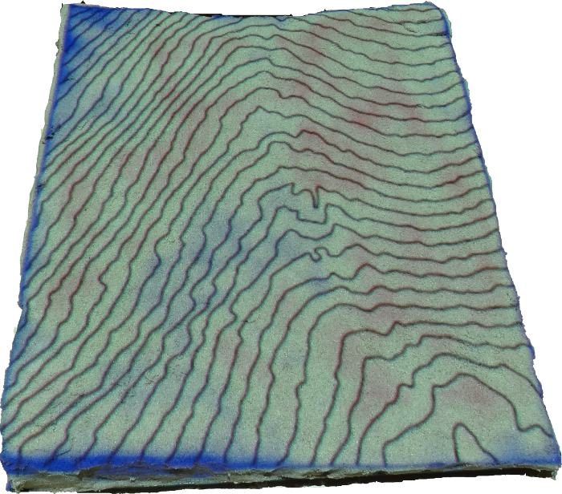

UAV/Lidar DSM fusion for water flow modeling
Anna Petrasova
Dec, 2015
Motivation
- We want to have the latest, high resolution DSM/DEM, but we don't have it for the entire study area.
- We need to replace DEM with DSM and vice versa.
Use cases
- Fusion of lidar and UAV data for watersheds and water flow modeling
- Fusion of UAV data from different times for water flow modeling
- Fusion of lidar and scanned data with Tangible Landscape
Lidar and UAV
Raster-based fusion uses linear combination of lidar and UAV:$z_f = d \cdot z_{UAV} + (1 − d) \cdot z_{lidar} \quad d\in \langle0, 1\rangle$
r.grow.distance
+
r.mapcalc


r.patch.smooth
g.extension r.patch.smooth url=https://github.com/petrasovaa/r.patch.smooth
r.patch.smooth --h
Description:
Module for patching rasters with smoothing along edges
Keywords:
raster, patch
Usage:
r.patch.smooth.py input=name[,name,...] output=name smooth_dist=value
[--overwrite] [--help] [--verbose] [--quiet] [--ui]
Flags:
--o Allow output files to overwrite existing files
--h Print usage summary
--v Verbose module output
--q Quiet module output
--ui Force launching GUI dialog
Parameters:
input Name of input raster map(s)
output Name for output raster map
smooth_dist Smoothing distance
Fusion of UAV data from March and June

Method 1: Minimum raster
r.series input=march,june output=march_june_min,march_june_minraster
method=minimum,min_raster
Derived mask
r.series method=min_raster
Derived mask
r.series method=min_raster
+
r.neighbors

Method 2: Import points with mask and interpolate
- new v.in.lidar mask option for importing point with vector area
- mask vector created using r.series
- buffer on both sides to avoid discontinuities at the edge

Method 3: random sampling
- patch rasters
- r.random for random sampling
- interpolate

Fusion summary
- raster-based weighted average fusion
- time efficient
- works best when edges are bare ground
- it is important to derive accurate mask
- random sampling method gives best results, but not significantly better than importing points with mask
- takes a more time
- needs sufficient number of random points, otherwise we will miss features
- suitable when we don't have original point clouds
Tangible Landscape fusion application
Physical model of Mid Pines gully
- scale 1 : 420
- 4 times vertical exaggeration

Tangible Landscape fusion application
Physical model of Mid Pines gully

- scale 1 : 420
- 4 times vertical exaggeration
- built by projecting contours and difference
Watersheds (based on lidar)
r.sim.water on fused DEM

Modification

r.sim.water on changed DEM

Difference
Fusion
When DSMs don't match
From difference map (e.g. UAV DSM and lidar DEM) we can compute smoothed difference and subtract it from UAV DSM to align 2 elevation models